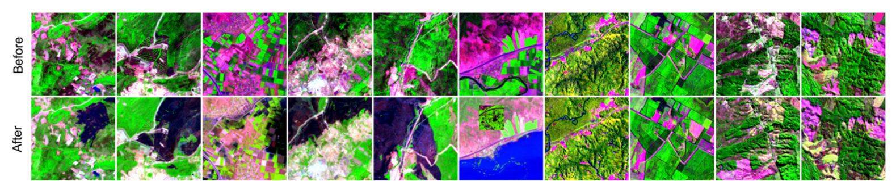
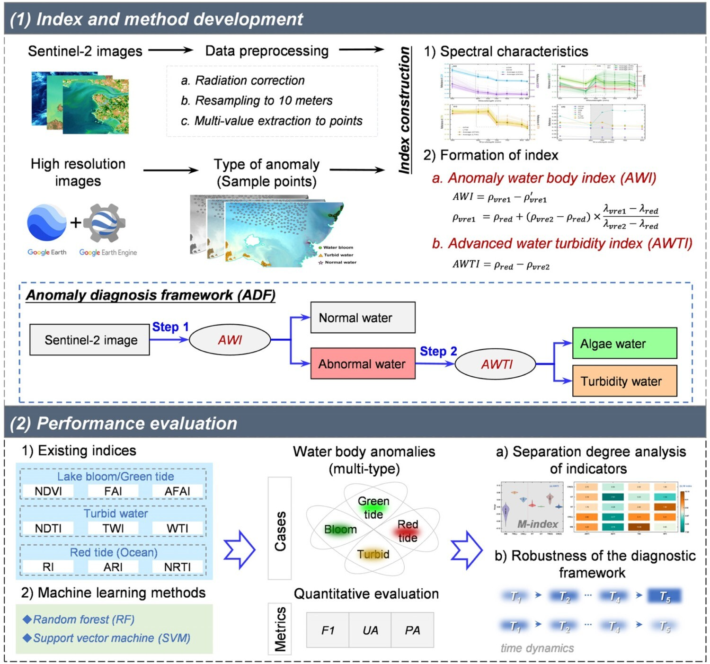
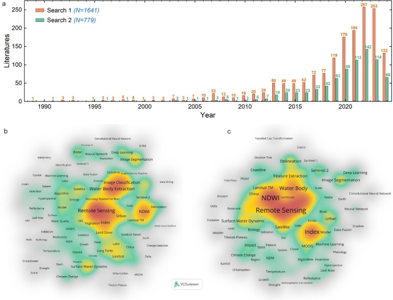
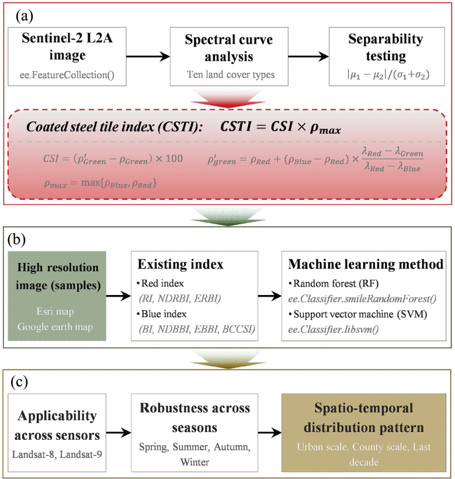

基本介绍
2025年6月博士毕业于北京师范大学地理科学学部，专业地图学与地理信息系统，导师潘耀忠教授。博士毕业后，于2025年7月前往北京航空航天大学国际创新学院（杭州），联合国附属空间科技教育亚太区域中心（中国），从事博士后研究。目前的研究课题是“气候变化背景下全球陆地保护区的森林扰动”。
主要研究内容包括遥感解译、植被扰动、资源环境评估。期待与更多学者开展学术合作！
科研速览：
- 主持78批博士后面上资助、国家重点实验室开放课题；
- 第一作者在IEEE-TGRS、JAG和IEEE-JSTARS等发表论文10余篇；
- 担任IEEE-TGRS、IEEE-JSTARS、IJDE等国际期刊审稿人；
- 获北京市优秀毕业生、学术创新奖特等奖。
最新动态 | NEWS

[2026-07] 论文发表
以第一作者的研究“Optimizing Spectral Inputs for Deep Learning-Based Vegetation Destruction Detection Using Sentinel-2 Imagery”发表于Remote Sensing。
[2026-05] 期刊客座编辑
在Remote Sensing期刊组织“Monitoring Vegetation Dynamics Using Remote Sensing Images”专栏。
[2026/01-2026/04] 论文发表
合作研究发表于International Journal of Applied Earth Observation and Geoinformation、Computers and Electronics in Agriculture、GIScience & Remote Sensing、Ecological Indicators等期刊。
[2025-12] 获批资助
获得第78批中国博士后科学基金面上资助（资助号：2025M784265）。

[2025-08] 论文发表
合作研究“A novel red-edge-based anomalous water detection index and diagnostic framework”发表于International Journal of Digital Earth。
[2025-05] 毕业答辩
获得博士学位，论文题目为“面向植被破坏遥感探测的新指数构建与应用研究”。

[2025-03] 论文发表
以第一作者的研究“Evaluating spectral indices for water extraction: limitations and contextual usage recommendations”发表于International Journal of Applied Earth Observation and Geoinformation。

[2025-02] 论文发表
以第一作者的研究“A new effective and robust index using spectral curve shapes and local reflectance peaks”发表于IEEE Transactions on Geoscience and Remote Sensing。
[2025-06] 学术荣誉
- 获得北京市优秀毕业生及校级优秀毕业生荣誉称号。
- 获得北京师范大学研究生学术创新奖特等奖。
Education
| Degree | Institution | Period |
|---|---|---|
| PhD | Beijing Normal University | 2021.09 – 2025.06 |
| MSc | China University of Mining and Technology, Beijing | 2018.09 – 2021.06 |
| BSc | Henan Polytechnic University | 2014.09 – 2018.06 |
Work Experience
| Position | Institution | Period |
|---|---|---|
| Postdoc | Hangzhou International Innovation Institute, Beihang University | 2025.07 – Present |
奖励与荣誉 | AWARDS & HONORS
Time |
Honor |
奖励/荣誉 |
|---|---|---|
| 2025 | Grand Prize for Graduate Student Academic Innovation (BNU) | 研究生学术创新奖“特等奖” |
| 2025 | Outstanding Graduate Student of Bejing (Beijing) | 北京市优秀毕业生 |
| 2025 | School Outstanding Graduate Student (BNU) | 校级优秀毕业生 |
| 2023 | School Merit Student (BNU) | 校级三好学生 |
| 2022 & 2023 | First Prize of Academic Scholarship (BNU) | 校级一等奖学金 |
| 2021 | Outstanding Graduate Student of Bejing (Beijing) | 北京市优秀毕业生 |
| 2021 | School Outstanding Graduate Student (CUMTB) | 校级优秀毕业生 |
| 2019 & 2020 | School Outstanding Student (CUMTB) | 校级优秀研究生 |
| 2020 | Second Prize of Academic Scholarship (CUMTB) | 校级二等奖学金 |
| 2019 | First Prize of Academic Scholarship (CUMTB) | 校级一等奖学金 |
| 2015 | School Merit Student (HPU) | 校级三好学生 |
| 2015 | First Prize of Academic Scholarship (HPU) | 校级一等奖学金 |
项目经历
- 第78批中国博士后科学基金面上资助, 突发性植被破坏事件的光学与雷达遥感协同识别方法及典型案例应用. 2026.1-2027.12. (主持)
- 遥感与数字地球全国重点实验室、北京市陆表遥感数据产品工程技术研究中心2022年开放课题, 基于Sentinel-1数据的森林砍伐检测方法研究. 2022.7-2024.1. (主持, 已结题)
- 遥感与数字地球全国重点实验室、北京市陆表遥感数据产品工程技术研究中心2024年开放课题, 基于Sentinel-2影像的复杂城市场景涂层钢瓦提取研究. 2024.7-2025.6. (主持, 已结题)
- 国家自然科学基金重大项目课题, 地表异常遥感响应特征与语义表征. 2022.1-2026.12. (参与, 在研)
科研活动
学术会议
- 2024年4月14至19日, 奥地利, 维也纳, 2024年欧洲地球科学联盟年会(EGU2024), 分会场“NH6.2 - Application of remote sensing and Earth-observation data in natural hazard and risk studies”做口头汇报(Improving the detection accuracy of vegetation destruction events using bands sensitive to vegetation foliage, canopy and water content)
- 2023年6月16至18日,中国,成都,第六届全国定量遥感学术论坛,分论坛“森林扰动与灾害遥感”做海报交流(基于基线的植被指数BBVI: 一种用于植被破坏探测的新型光谱指标)
期刊审稿
- IEEE Transactions on Geoscience and Remote Sensing, IEEE Journal of Selected Topics in Applied Earth Observations and Remote Sensing, IEEE ACCESS
- International Journal of Digital Earth, Geo-spatial Information Science, GIScience & Remote Sensing
- Remote Sensing, Land, Sustainability
- Ecology and Evolution, PLOS ONE
兴趣爱好
Basketball, Photography, Badminton